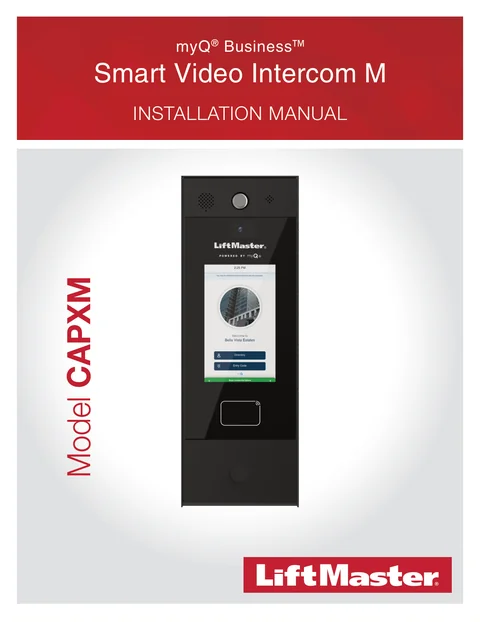

Technical writing & knowledge management.
I’m Luke Bowman, a Network Deployment Project Coordinator at EOS IT Solutions. I map deployment workflows and help maintain documentation repositories.
Selected work
Chamberlain Group
Product documentation
Installation manuals, quick-start guides, and technical illustrations.



Amherst
IT support knowledge base
I built and managed a Confluence knowledge base for IT support. I set standards for how teams organized, reviewed, and updated articles.
Guide
Designing operational reports
A checklist for defining measures, explaining comparisons, and separating what the data shows from possible causes.
How I work
-
Gather requirements
Start with the audience, the system, and the decisions people need to make.
-
Map the workflow
Trace the handoffs and decisions before deciding what to document.
-
Review with technical teams
Work across technical teams and stakeholders to resolve ambiguity and review the details.
-
Assign ownership and reviews
Define ownership and review practices so content can keep pace with change.
Luke Bowman
About Luke
I studied graphic design before moving into technical publications. I still think about layout when I write: headings, labels, and drawings can help someone find the right step without reading the whole page.
At Chamberlain Group, I wrote product manuals for global audiences. At Amherst, I built a knowledge base for IT support. Now I gather requirements, map workflows, and help maintain documentation for network deployments at EOS IT Solutions.
View résumé